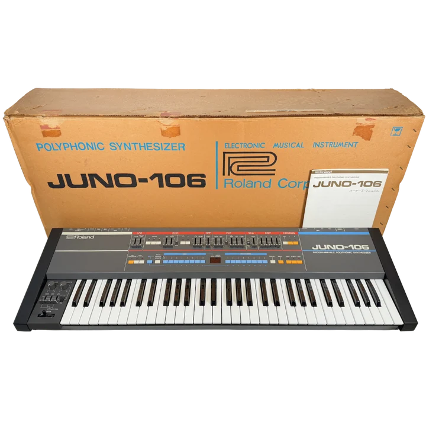
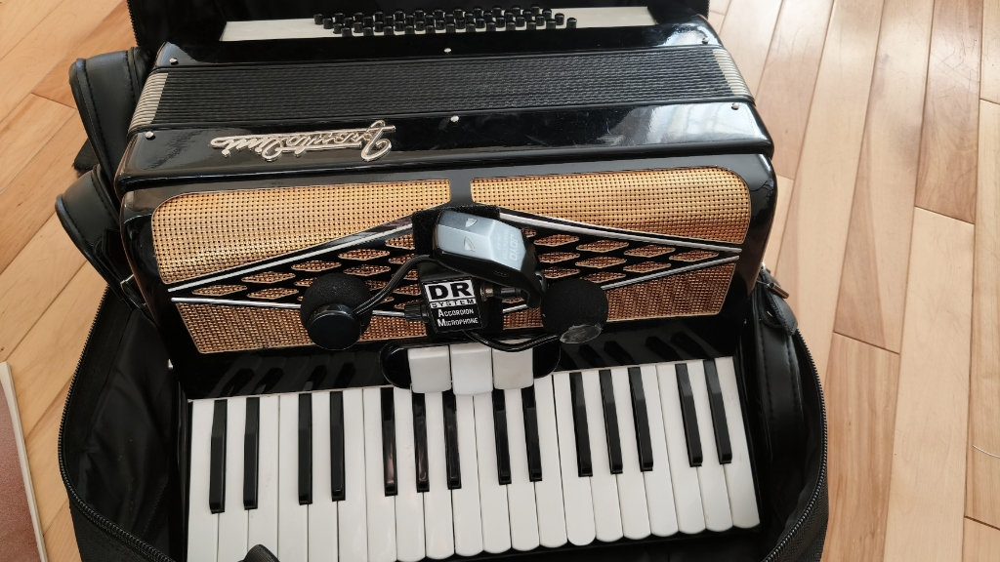
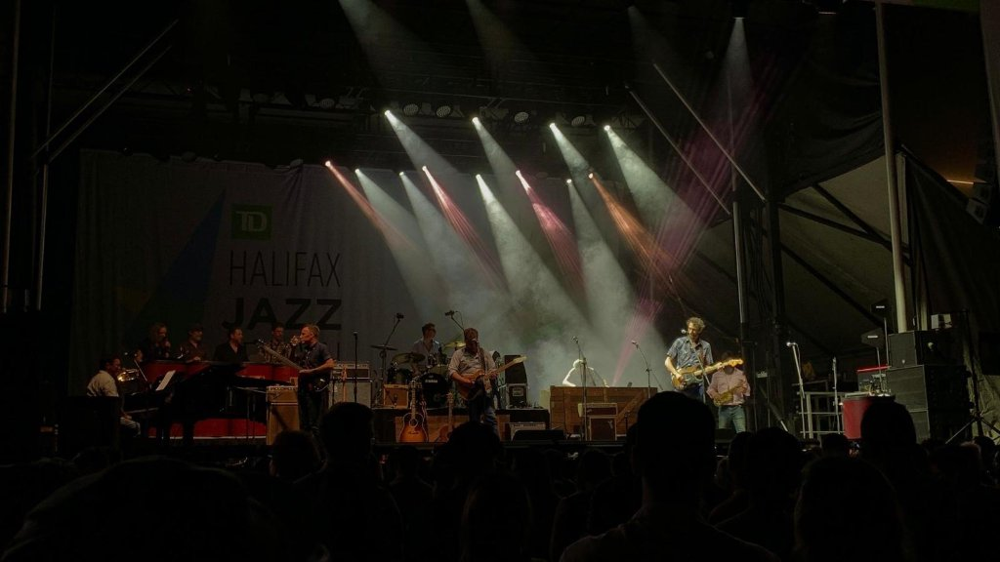
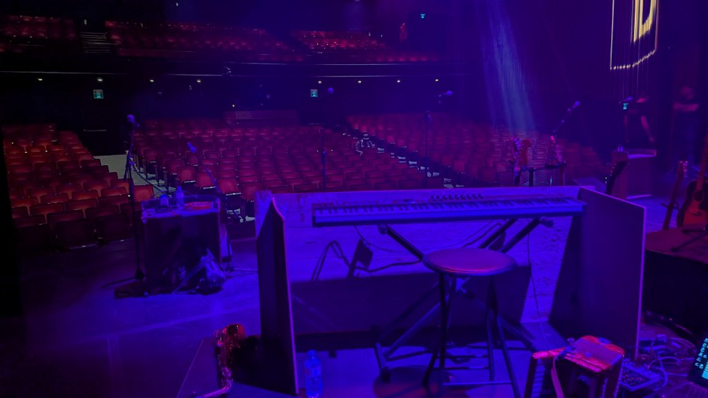

What is this program, anyway?
I've been playing keyboards in cover bands (and non-cover!) since the 80s. My first rig back then was a Roland RD-200 piano, Juno 106, Yamaha DX-21, and an S-330 sampler. I could have four things running at the same time, and I'd turn things up and down instead of on-off as I played: fading in strings here, layering piano with pad there, playing to the strengths of the various boxes.

Gig-Tested: Sunday Sprints & Live Notes
Fanfare builds on that way of playing, but on steroids: a dedicated Windows app with 24 strips, each with 3 VST slots, all controlled via MIDI CC messages. The setups are intended to be run from a master controller, like an Arturia KeyLab or a Yamaha CK-88, but any MIDI keyboard works. It also can process audio (I use that for my accordion: compression, EQ, and a splash of reverb straight through the rack without needing outboard pedals).

Development on the app tends to peak on Sundays, specifically because I come back from Friday and Saturday gigs with “notes” (underrun glitches, or user-comfort stuff I think of while playing). When a plugin misbehaves in a studio, you restart; when you're live in front of a room of people, you need absolute rock-solid reliability. I'm my own one-person test group. :)
Enter BLEEP-216: A Native Polyphonic Synth
This week's big innovation is the BLEEP-216 synth, a sorta-homage to my much missed Juno 106. I have the Roland Juno 106 VST and like it, but it's pretty heavy on resources. I wanted something native in the app, with two oscillators instead of one, and 16-voice polyphony instead of 6.

I'm having a blast messing around with the presets. Tonight's work is to get the program to treat the synth like it treats VSTs, so I can get 3 synth instances playing on a strip. And if we do that, we should have independent keyranges for each, since right now there's just one keyrange for a strip. It would be super cool to have a complex setup all on one strip.
Maybe this is how bloat happens, but what the hell. Not many programs around with this much going on, for under 15MB!
The “Last Waltz” & Channeling Garth Hudson
If you've noticed the “Last Waltz” references in some of the screenshots and manual examples, there's a real story behind that. Every year I play in the backing band for a full reenactment of The Band's legendary farewell concert, The Last Waltz. We bring in locally celebrated guest musicians to come up and play Bob Dylan, Joni Mitchell, Neil Young, Van Morrison, and Muddy Waters, complete with a roaring live horn section. It is an absolute blast.

My job on stage is the Garth Hudson impersonation, juggling Hammond B3 organ, quirky vintage 70s synths, and live accordion across dozens of songs.
Fanfare will be running the entire rig for me during those shows next week. It supplies Front of House (FOH) while simultaneously running a dedicated In-Ear Monitor (IEM) mix straight into my ears, with significantly more accordion dialed into my personal trim than the house gets. And when Sunday rolls around after those gigs, I'll definitely be back at the keyboard with a fresh batch of notes to make Fanfare even tighter.

What did your first gigging rig look like back in the day? Or if you're taking software on stage now, what's your biggest headache? Leave a comment below!
Discussion & Comments
Prefer GitHub Discussions? Join the conversation on GitHub →